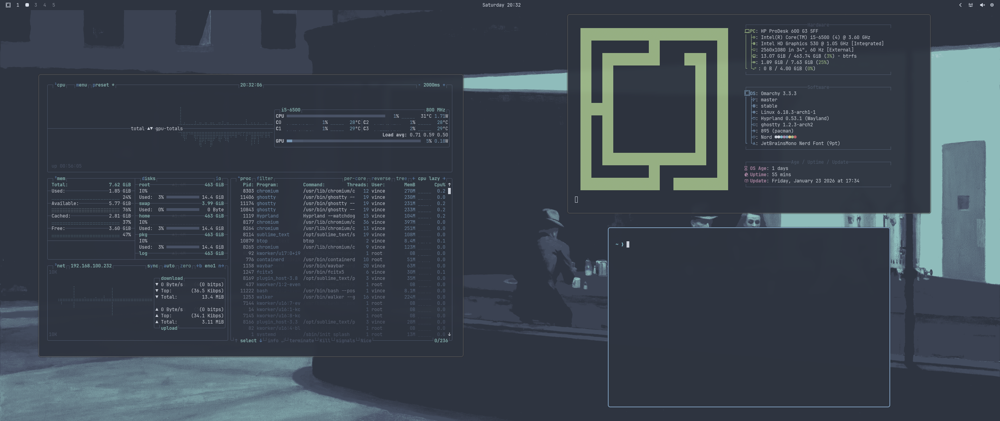

Hello.
My name is Vince, I am from Hungary, I am interested in anything computer-related. This site was made to talk about some of the experiences I had using Omarchy.
Set up.
The installation was pretty smooth, I had no problems turning off secure-boot and the installer was really easy to use. It asked for everything that you would think it would ask for: keyboard layout, timezone, hostname, username.
The installation is done via a usb stick that has the Omarchy iso burned on to it. The official iso can be acquired from the Omarchy website: omarchy.org
If you have any questions about the installation, you should consult the Omarchy manual at learn.omacom.io/2/the-omarchy-manual
BE AWARE! THE INSTALLATION FORMATS THE DRIVE, ALL FILES WILL BE DELETED.
First boot.
The first time you turn on your machine (with the os installed) you will be prompted to enter your password that you set during the installation. Then, it will boot you into the desktop.
In most cases, Omarchy will pick up both your screen and your mouse + keyboard. You may need to set the refresh rate of you monitor, because to my knowledge, it defaults to 60Hz. This can be done at Setup > Monitors. The format used by Omarchy is:
monitor = [input], [resolution]@[refreshrate], auto, [scaling]
For example:
monitor = DP-2, 2560x1080@100, auto, 1
Some configuration.
The default look of Omarchy is really pretty, but, if you want to change some stuff, you can totally do that too. Omarchy has really good theming, where you can change all the colors to a theme you like at Style > Theme.
Also, if you want you can tweak the Hyprland settings at Setup > Config > Hyprland and also other config files like Hyprlock or Walker. If you want to steal my animations, here they are:
bezier = linear, 0, 0, 1, 1 animation = windows, 1, 4, linear animation = workspaces, 1, 2, linear, fade animation = windowsIn, 1, 2, linear, popin 70% animation = windowsOut, 1, 2, linear, popin 70%
If you choose to add them, remember to put them in at the end of the file and not replace the file.
Pros and cons of Omarchy.
Let's start with the good, Omarchy is really easy to set up, for anyone with even a little tech know-how. It looks and feels great out of the box with no touches, the default themes are brilliant and don't even get me started on the animations. It is everything good about Hyprland, without the pain of setting up Hyprland.
The default apps are either really good or why is this here. For ever perfect choice like Obs studio, there is a total miss like Basecamp, this is what some may call the sins of DHH.
The default keybinds are so Mac that I want to vomit, remaping is a requirement.
This is what I would suggest:
# Vimkeys unbind = SUPER, J unbind = SUPER, K bindd = SUPER CTRL, J, Toggle window split, togglesplit bindd = SUPER ALT, K, Show key bindings, exec, omarchy-menu-keybindings bindd = SUPER, H, Move focus left, movefocus, l bindd = SUPER, L, Move focus right, movefocus, r bindd = SUPER, K, Move focus up, movefocus, u bindd = SUPER, J, Move focus down, movefocus, d bindd = SUPER SHIFT, H, Swap window to the left, swapwindow, l bindd = SUPER SHIFT, L, Swap window to the right, swapwindow, r bindd = SUPER SHIFT, K, Swap window up, swapwindow, u bindd = SUPER SHIFT, J, Swap window down, swapwindow, d bindd = SUPER ALT, H, Move window to group on left, moveintogroup, l bindd = SUPER ALT, L, Move window to group on right, moveintogroup, r bindd = SUPER ALT, K, Move window to group on top, moveintogroup, u bindd = SUPER ALT, J, Move window to group on bottom, moveintogroup, d bindd = SUPER ALT, H, Move grouped window focus left, changegroupactive, b bindd = SUPER ALT, L, Move grouped window focus right, changegroupactive, f # Remap Close current from W to Q unbind = SUPER, W bind = SUPER, Q, killactive
Not perfect, not as sh*t as the default.
The same thing here, as with animations, add this to the end of the config, don't replace it!
Peace.